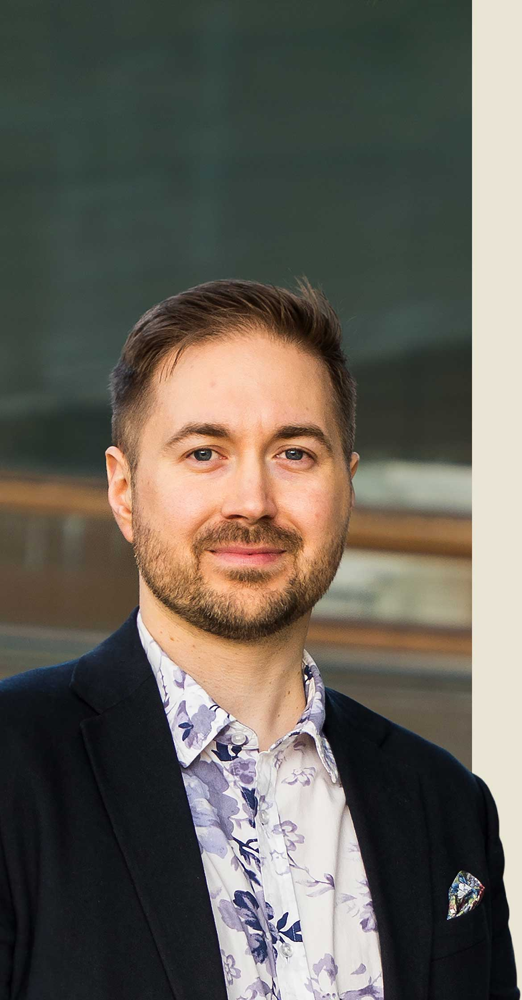

Tekoäly muuttaa kaiken — työn, talouden sekä sen, miten valtio ja yhteiskunnat laajemmin toimivat. Tämä muutos tapahtuu kaiken lisäksi ennennäkemättömällä nopeudella. Kirjoitan erityisesti siitä, miten se vaikuttaa talouteen, sivistykseen ja vapauteen. Näiden kolmen on toimittava eduksemme, jotta meille toteutuu digitaalinen itsenäisyys. Jotta Suomi voi olla yhteiskunta, joka käyttää teknologiaa omilla ehdoillaan.
Kaikki kirjoituksetMinulla on kokemusta yli vuosikymmenen ajalta turvallisten ohjelmistojen ja pankkijärjestelmien rakentajana. Sitä taustaa vasten kirjoitan siitä, miksi tekoäly ei muuta pelkästään työtä, vaan pakottaa meidät miettimään uudelleen lähes kaikki yhteiskunnan osa-alueet. Sosiaaliturvan, miksi digitaalinen itsenäisyys on välttämättömyys vapaan yhteiskunnan kannalta, ja miten varmistamme, että teknologiasta hyötyvät kaikki — eivät vain harvat.
Käytän ja kehitän tekoälytyökaluja työssäni päivittäin. Tekoäly on aikamme merkittävin teknologinen murros, ja Suomen on tartuttava siihen aktiivisesti, jotta saamme siitä hyötyjä emmekä pelkkiä haittoja.
Tekoäly vahvistaa sekä kykyjä että vahinkoja. Julkisen sektorin sovelluksissa — etuuspäätöksissä, lupien käsittelyssä, ennakoivassa poliisitoiminnassa — panokset ovat liian suuria, jotta järjestelmiä voitaisiin ottaa käyttöön ilman läpinäkyvyyttä ja valvontaa. Haluan tarkistettavissa olevia algoritmeja merkityksellisiin päätöksiin, avoimia tekoälymalleja silloin kun mahdollista, ja pakollista ihmisvalvontaa yksilöiden oikeuksiin vaikuttavissa päätöksissä.
Mitä voimakkaammaksi tekoäly kehittyy, sitä tärkeämmäksi yksityisyyden suoja tulee. Tekoälyjärjestelmät ovat tiedonnälkäisiä; ilman vahvoja tietosuojasääntöjä niistä tulee valvontainfrastruktuuria. EU:n tekoälysäädös on askel oikeaan suuntaan, mutta toimeenpanon on oltava tosiasiallista — ei pelkkä muodollisuus.

Konnevedellä tekoäly lyhensi käsittelyajan kahdesta kuukaudesta päiviin. Kirkkonummi on liian pieni yksin — mutta yhteistyöllä muutos on mahdollinen.

Tekoäly tekee kahdessa minuutissa sen, mihin kehittäjältä meni kaksi viikkoa. Koodin hinta romahtaa — mutta mistä kehittäjille sitten maksetaan?

Tekoäly muuttaa yhteiskuntaamme – mutta et ehkä odottaisi, miten. Suurimmat muutokset näemme yksityiselämässä ja lasten arjessa.
Suomen talouden on toimittava tekoälyn aikakaudella. Se tarkoittaa uusia yrityksiä, uusia työpaikkoja ja julkisia palveluita, jotka oikeasti käyttävät teknologiaa eivätkä vain osta sitä ulkopuolelta. Ilman teknologiaosaamista eduskunnassa päätökset tekoälyhankinnoista, datainfrastruktuurista ja työelämästä tekevät ihmiset, jotka eivät tiedä mitä ovat ostamassa.
Kirjoitan taloudesta sen kautta, mitä olen tehnyt yli vuosikymmenen ajan: rakentanut ohjelmistoja ja ohjelmistotiimejä eri teollisuudenaloilla. Tekoäly muuttaa työn, kilpailukyvyn ja julkisten palveluiden perustan. Suomi voi olla tässä edelläkävijä, mutta vain jos julkinen panostus suunnataan kotimaiseen osaamiseen siten, että ymmärretään mitä ollaan tekemässä.
Toimiva talous tekoälyn aikana ei ole pelkkä slogan. Se on konkretiaa: osaamista, joka kestää murroksen yli, yrityksiä, jotka voivat rakentaa suomalaisen ja eurooppalaisen infrastruktuurin päälle, ja valtio, joka hankkii teknologiaa omilla ehdoillaan.

Caruna vaihtaa omistajaa, mutta sähköverkon tulevaisuuden ratkaisee sääntely — ei omistaja. Suomi voi tehdä sähköistymisestä kilpailuedun.

Vaihdavihreisiin.fi-kampanja kutsuu liberaalit ja sosiaaliliberaalit Vihreisiin — puolueeseen, jossa arvoista ei tarvitse tinkiä.

Markkinatalous on tehokkain tunnettu tapa jakaa resursseja. Vihreät on sen ainoa aito puolustaja Suomessa – ei kamreritaloutta, vaan aitoja markkinoita.
Suomen vahvuus on aina ollut sen ihmisissä ja heidän osaamisessaan. Tekoälyn aikana sivistyksen on pysyttävä saumattomana — varhaiskasvatuksesta työelämään ja aina eläkepäiville asti — niin että jokainen voi kehittää potentiaaliaan täysimääräisesti. Silloin tekoälyn tuottavuushyödyt kertautuvat koko yhteiskunnalle, eikä ketään jätetä jälkeen.
Koulutus ei ole kuluerä, jota leikataan ensimmäisenä kun budjetti tiukkenee. Se on koko tekoälyn jälkeisen ajan keskeistä infrastruktuuria. Säästöt opetuksesta, kirjastoista, ammatillisesta koulutuksesta ja opiskelusta maksetaan takaisin kymmenkertaisina, kun työmarkkinat muuttuvat nopeammin kuin ihmiset ehtivät oppia uusia asioita.
Saumaton sivistys tarkoittaa, että oppiminen ja sivistys eivät lopu koskaan, vaan se on mahdollista elämäntilanteesta riippumatta. Tekoäly tekee tästä polusta valtavan paljon tärkeämmän. Maa, joka pitää polun auki kaikille, saa käyttöönsä koko kansansa potentiaalin. Se on vahvempi pohja kuin mikään muu kilpailuetu.

Tekoälyä on esitetty ratkaisuna julkisten palveluiden kehittämiseen. Sillä voi olla roolinsa, mutta se ei korvaa ihmistä eikä selkeää suunnitelmaa.

Hallituksen puoliväliriihi toi leikkauksia valtionosuuksiin ja yhteisöveroon. Se kaventaa kunnanvaltuutettujen liikkumatilaa merkittävästi.

Koulutus on kunnan tärkein tehtävä. Koulutusinvestoinnit näkyvät kauas tulevaisuuteen – eikä sieltä ole pikavoittoja saatavissa.
Vapaus on yksi tekoälyn aikakauden tärkeimmistä kysymyksistä. Se on kysymys siitä pysyykö datasi, viestintäsi ja arkesi sinun ominasi, kun suurin osa infrastruktuurista, jossa ne ovat, on jonkun toisen omistuksessa. Yksityisyydensuoja on perusoikeus — mutta laajempi kysymys on, säilyvätkö perusoikeudet teknologiassa, joka tekee massojen valvomisen lähes ilmaiseksi.
Olen rakentanut urallani ohjelmistoja ympäristöissä, joissa datan säännöt otetaan vakavasti — säännellyillä aloilla kuten finanssialalla — sekä ympäristöissä, joissa data on liiketoimintaa. Se kokemus on tehnyt yhden asian selväksi: yksityisyys ja perusoikeudet eivät suojaa itse itseään. Niitä suojaavat lait, asetukset ja yksilöt, jotka suhtautuvat asiaan intohimoisesti.
Vapauden varmaksi tekeminen tekoälyn aikana edellyttää punnittuja myönnytyksiä sekä tiukkoja rajoja. Massavalvonta, biometristen tunnisteiden käytön laajentaminen tai viestien automaattinen seulonta eivät ole työkaluja, joita tulee ottaa käyttöön kevyesti, jos laisinkaan. Jokaiselle yksityisyyttä murentavalle askeleella pitää olla aukottomat perustelut ja selkeää näyttöä hyödyistä, muuten punnintaa sen järkevyydestä ei voi, eikä kannata, tehdä.

Kirkkonummi nosti sateenkaarilipun salkoon 22.6.2026. Liputus on tärkeä, mutta yhdenvertaisuus vaatii myös konkreettisia tekoja syksyn talousarviossa.

Kirkkonummi osti Lähteelän rannikkokohteen. Se on yksi harvoista paikoista, jonne pääsee myös ilman omaa venettä — nyt se on pysyvästi kaikkien saavutettavissa.

Sateenkaarinuorten kiusaaminen kasvaa. Kirkkonummi äänesti 30–14 liputuksen puolesta — pieni ele, jolla on mitattavia vaikutuksia nuorten hyvinvointiin.
Suomen ja Euroopan on hallittava omaa digitaalista infrastruktuuriaan. Siksi perustin Digitaalinen itsenäisyys -kansalaisaloitteen, joka keräsi eduskuntakäsittelyyn vaadittavat 50 000 allekirjoitusta heinäkuussa 2026. Aloitteessa vaadimme Suomea vähentämään riippuvuuttaan ulkomaisista digipalveluiden tarjoajista ja vahvistamaan digitaalista suvereniteettia.
Suomen julkishallinto on voimakkaasti riippuvainen esimerkiksi yhdysvaltalaisista suurista pilvipalvelujen tarjoajista, niin kutsutuista hyperscalereistä — Amazonista, Microsoftista ja Googlesta. Vuoden 2022 jälkeen on tullut valitettavan selkeäksi, että valtapeli geopolitiikassa on tullut jäädäkseen, myös digitaaliseen toimintaympäristöön. Suomalaisia ja eurooppalaisia vaihtoehtoja on olemassa: UpCloud on konkreettinen esimerkki suorituskykyisestä kotimaisesta pilvipalvelusta, jota julkinen sektori voi käyttää. Edistän julkisten IT-hankintojen pilkkomista ja avoimen lähdekoodin suosimista sekä kriisivalmiuden — digitaalisen huoltovarmuuden — huomioimista hankinnoissa.
Digitaalinen itsenäisyys tarkoittaa myös datan siirrettävyyttä ja riippuvuuden yksittäisistä toimittajista välttämistä. Julkisella rahalla tuotetun julkisen datan tulee olla siirrettävää ja tallennettuna siten, että sitä eivät ulkopuoliset tahot voi väärinkäyttää.

Digitaalinen itsenäisyys rakentuu arjen valinnoissa. Tässä on 5 + 1 konkreettista keinoa, joilla vahvistat sitä ja digitaalista huoltovarmuutta itse.

Kirkkonummi nojaa lähes kaikessa toiminnassaan digitaalisiin järjestelmiin. Aloite esittää riippuvuuksien kartoitusta ja siirtymistä avoimiin tiedostomuotoihin.
Digitaalinen itsenäisyys ja huoltovarmuus syntyvät hankintapäätöksistä. Helsinki valitsi suomalaisen UpCloudin julkisten palveluiden ydinjärjestelmän alustaksi.
Olen Kirkkonummen kunnanvaltuutettu. Se tarkoittaa, että olen päättämässä kunnan budjetista, kaavoituksesta, palvelusopimuksista ja infrastruktuurista — päätöksistä, jotka vaikuttavat suoraan siihen, millaista täällä on elää. Suurin osa näistä päätöksistä tehdään ilman suurempaa julkista huomiota, ja erityisesti silloin on merkityksellistä, kuka on päättämässä.
Paikallisesti ajamani asiat ovat samoja kuin kansallisesti: digitaalisia palveluita, jotka oikeasti toimivat asukkaiden hyväksi, kaavoitus, joka hyödyntää Kirkkonummen maastoa sen sijaan että taistelee sitä vastaan, ja joukkoliikenne, joka mahdollistaa kunnan kestävän kasvun.
Kirkkonummi on kaksikielinen, rannikolla sijaitseva kunta, joka kasvaa nopeasti Helsingin seudun reunalla. Sillä on paljon vahvuuksia — rantaviiva, luonto, monimuotoinen yhteisö — ja todellisia paineita: tulopohja, jolla on vaikeuksia pysyä tarpeiden perässä, ja alueelle kriittinen junarata. Paikallispolitiikka täällä ei ole pientä politiikkaa.

Äänestin Västra-rannikkoyhteistyötä vastaan. Valtuusto päätti liittyä. Perusteluni: rahat kuuluvat sivistyspalveluihin, ei sopimukseen josta ei pääse irti.

Länsirata-päätöstä tehdessä mitattiin päättäjien kykyä tehdä koko kunnalle strategisesti tärkeitä, tulevaisuuteen katsovia ratkaisuja.

Kirkkonummen keskustan remontti rakentaa Fyyrin, Lyyran ja Rovastinpuiston sivistyksen keskittymän. Se luo edellytyksiä kasvulle vuosikymmeniksi.